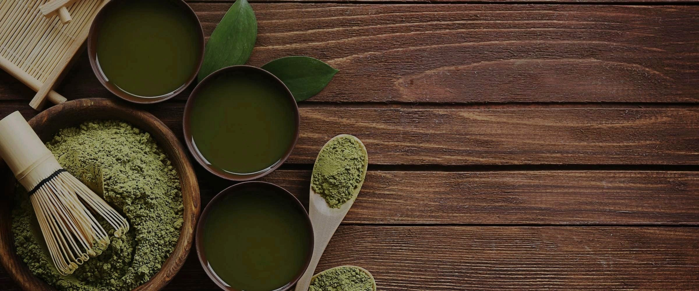
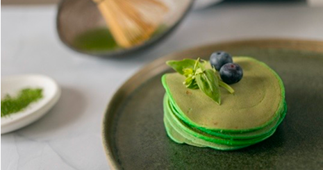

L'essenza dell'Asia in un soffio: scopri il mondo delle polveri millenarie.
Dalla millenaria tradizione del Matcha alle proprietà rigeneranti delle radici orientali: un viaggio sensoriale tra i colori e i benefici delle polveri asiatiche.
Esplora le nostre guide dedicate ai tè pregiati, ai superfood funzionali e ai fiori esotici, per scoprire come integrare la saggezza dell'Asia nel tuo rituale quotidiano.

Utilizzale nella loro forma più pura per arricchire la tua routine di salute naturale o sperimenta la loro magia in cucina: da bevande energizzanti a dolci dal colore magnetico, ogni polvere trasforma una semplice ricetta in un capolavoro di gusto e vitalità.